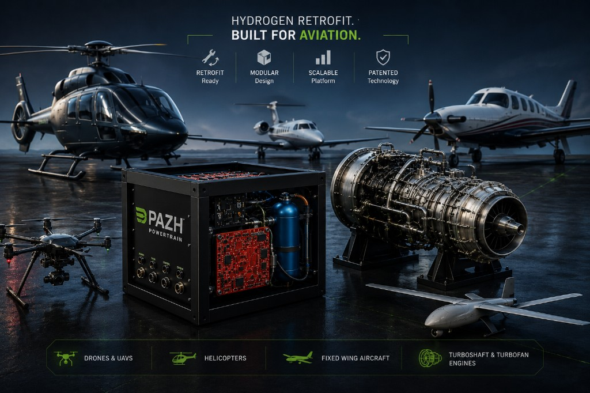
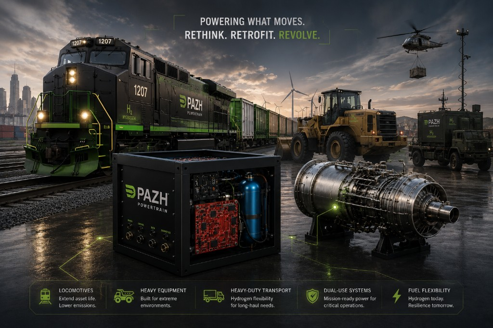
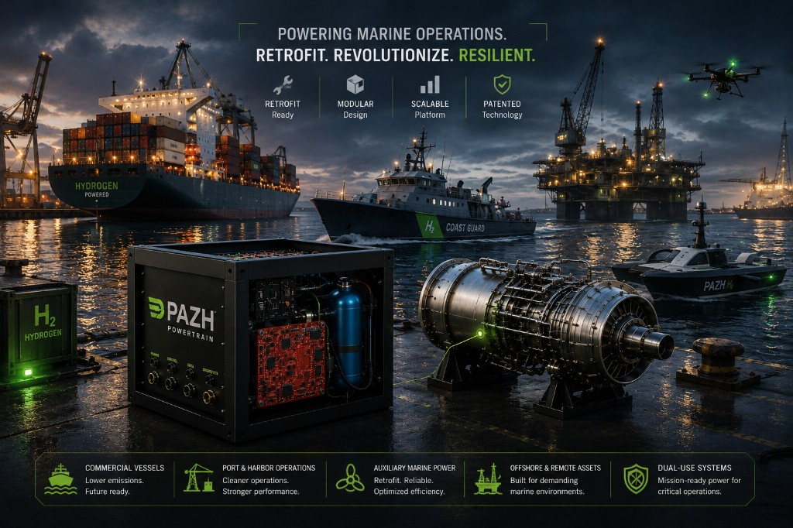
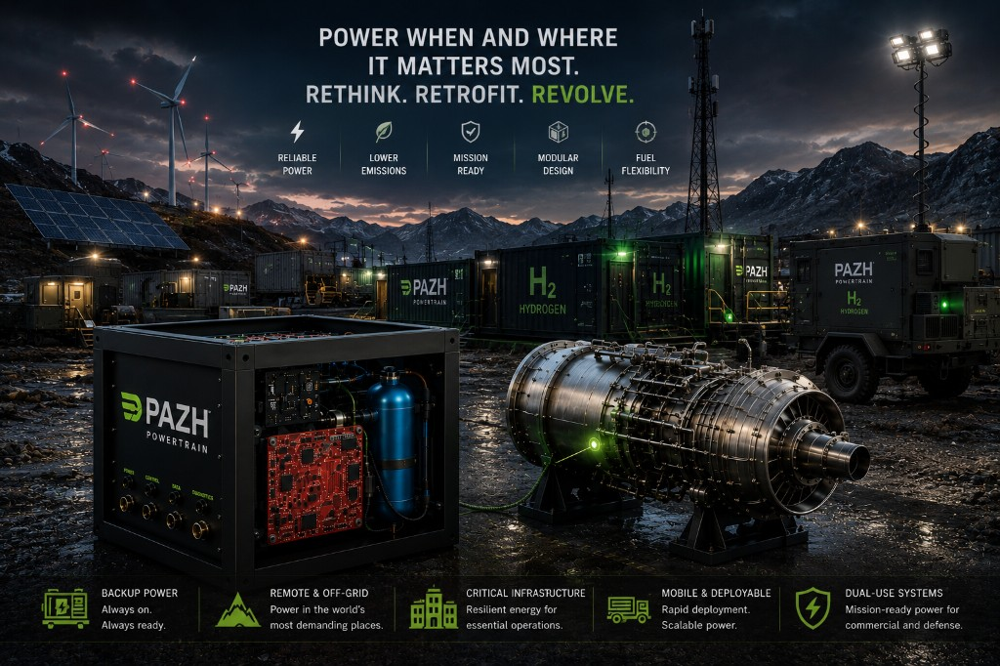

Aerospace, Aviation & Dual-Use Systems
Hydrogen Retrofit for Next-Generation Flight and Mission-Critical Platforms
Pazh Powertrain's patented hydrogen retrofit platform is designed to be customized for a broad range of aerospace and dual-use applications, enabling a practical transition toward lower-emission propulsion without requiring full engine or platform replacement.
Built around a flexible and modular retrofit architecture, the system is designed to integrate hydrogen into existing propulsion ecosystems while preserving operational reliability, minimizing infrastructure disruption, and reducing capital replacement costs. Rather than replacing entire fleets, Pazh focuses on modernizing and extending the value of existing assets through practical hydrogen integration pathways.
The platform can be adapted for a wide spectrum of aerospace systems ranging from UAVs and drones to helicopters, regional aircraft, auxiliary propulsion systems, and other vehicles powered by turboshaft and turbofan engines. This scalable approach enables deployment across both commercial and defense-oriented environments, including remote operations, mission-critical platforms, and specialized aviation systems.
By combining retrofit flexibility with hydrogen integration, Pazh Powertrain supports operators seeking improved sustainability, enhanced operational resilience, and a lower-risk pathway toward aviation decarbonization.

Rail & Heavy Transportation & Dual-Use Systems
Hydrogen Retrofit for High-Demand Mobility and Mission-Critical Operations
Pazh Powertrain's patented hydrogen retrofit platform is designed to support the transition of heavy transportation systems toward lower-emission operation without requiring full vehicle replacement. Built around a modular and adaptable architecture, the technology can be customized to integrate hydrogen into existing high-power propulsion ecosystems while preserving operational capability and reducing capital costs.
The platform is intended for a wide range of rail and heavy-duty applications, including locomotives, industrial transport systems, off-road heavy equipment, and specialized mobility platforms operating in demanding environments. Its retrofit-first approach enables operators to extend the life of valuable assets while reducing fuel dependency and supporting sustainability targets.
In addition to commercial deployment, the technology offers strong potential for dual-use and mission-critical applications, where operational resilience, fuel flexibility, and reliable power delivery are essential. This includes systems operating in remote, defense-support, logistics, and high-reliability environments, where practical hydrogen adoption can create long-term operational advantages.

Marine, Maritime & Dual-Use Systems
Hydrogen Retrofit for Marine Mobility and Mission-Critical Operations
Pazh Powertrain's patented hydrogen retrofit platform is designed to support the transition of marine and maritime systems toward lower-emission operation without requiring full vessel or propulsion replacement. Built around a modular and adaptable architecture, the technology enables practical hydrogen integration into existing high-power systems while preserving operational reliability and reducing infrastructure disruption.
The platform can be customized for a wide range of marine and maritime applications, including commercial vessels, port operations, auxiliary marine power systems, offshore support assets, and specialized mobility platforms operating in demanding environments. By focusing on retrofit rather than replacement, Pazh enables operators to modernize valuable assets while improving efficiency and supporting long-term sustainability objectives.
Beyond commercial deployment, the technology offers strong potential for dual-use and mission-critical maritime applications, where fuel flexibility, resilient power delivery, and operational reliability are essential. This includes systems operating in remote environments, logistics support, emergency response, and specialized maritime operations, where practical hydrogen adoption can provide long-term operational advantages.

Distributed Power, Remote Energy & Dual-Use Systems
Hydrogen Retrofit for Reliable Power in Demanding Environments
Pazh Powertrain's patented hydrogen retrofit platform is designed to support the transition of distributed power systems toward lower-emission operation without requiring full infrastructure replacement. Built around a modular and adaptable architecture, the technology enables practical hydrogen integration into existing turbine-based and power-generation ecosystems while preserving reliability, flexibility, and operational continuity.
The platform can be customized for a wide range of distributed and remote energy applications, including backup power systems, remote industrial sites, off-grid operations, mobile generation units, temporary energy infrastructure, and critical power systems operating in demanding environments. By focusing on retrofit rather than replacement, Pazh enables operators to modernize valuable assets while reducing operational disruption and long-term capital costs.
Beyond commercial deployment, the technology also supports dual-use and mission-critical energy systems, where resilient, flexible, and rapidly deployable power is essential. This includes systems operating in remote regions, emergency response, expeditionary environments, logistics support, and critical infrastructure applications, where practical hydrogen adoption can strengthen energy security and operational resilience.
Built for Real-World Deployment
From modular hydrogen integration concepts to legacy powertrain adaptation, Pazh’s approach is built around practical engineering, staged validation, and commercial deployment readiness.
Talk to Us